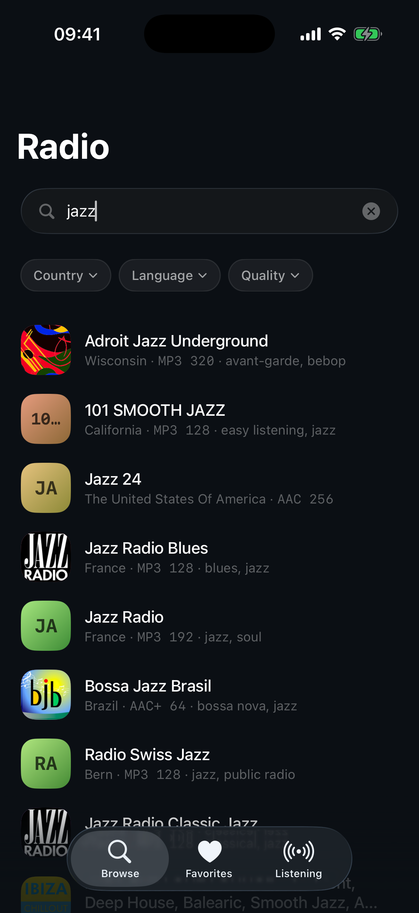

from written scope to a handover build tested on a phone.
Personal project · Product direction · 2026
Radio
An internet radio player for iOS, scoped and built in one working day. The experiment tested a simple premise: can written scope, independent agent review and physical device testing make a fast build assisted by AI accountable?



- Timeframe
- 8 hours
- Platform
- iOS
- My role
- Scope, agent direction, acceptance and device testing
- Status
- Working build, not shipped
01 / Overview
One day. One bounded question.
Radio was my first attempt at directing a product build assisted by AI without writing the code. The aim was not to manufacture a launch story in eight hours; it was to test a way of working.
I wrote the scope before the build began, so “finished” had a definition the building agent could not quietly rewrite. A second agent audited the result. I then moved the build off the simulator and onto a physical iPhone.
agents with separate responsibilities: build and audit.
automated tests passing at handover.
Fast did not mean finished. It meant the next uncertainty arrived sooner.
02 / Role
I set the boundary and judged the result.
The agents produced and examined the implementation. I remained responsible for the product definition, the division of labour and the final claim.
My responsibility
- Write the product scope and definition of done
- Keep the feature set small enough for the eight hour window
- Separate building from independent review
- Test the handover build on a physical iPhone
- Describe the outcome as a working build, not a shipped product
Agent responsibility
- Agent one implemented against the written scope
- Agent two audited the first agent’s output
- The audit rejected completion when blocking faults remained
- The build loop continued against explicit findings
03 / Process
A relay, not a single prompt.
The working model made responsibility visible. The builder did not audit itself, and the audit did not replace a final test in the environment where the product would actually run.
Define the finish line
The required behaviour was written before implementation, keeping the one day build from becoming an expanding backlog.
Direct one agent
The first agent implemented against the agreed scope and produced a candidate build.
Challenge with another
A separate agent reviewed the result and rejected work that presented itself as complete.
The scoped product: browse, play and search for internet radio stations.
04 / Audit
“Complete” failed independent review.
The second agent found four blocking faults in work that had been presented as finished. That was the point of the separation: confidence from the build process was not accepted as evidence.
Produce
Work quickly against a constrained, written definition.
Reject
Look for reasons the result should not yet be accepted.
Decide
Use the evidence to determine what can honestly be claimed.
Blocking faults at audit
The audit did not polish an already complete build; it changed the completion decision.
Tests at handover
The automated suite became part of the evidence, without being treated as the whole of it.
Unresolved product status
A functional handover build is still not the same thing as a released and supported product.
05 / Device
The phone found what the simulator could not.
A network failure appeared on the physical iPhone but could not be reproduced in the simulator. Testing in the actual context changed the understanding of the build at the last step.
The player was evaluated where network behaviour and audio playback mattered: on a phone.
Simulator evidence
The implementation could launch and exercise expected flows in a controlled environment.
Device evidence
Real network conditions exposed a failure the controlled environment did not produce.
The lesson was not simply “test on a phone.” It was that acceptance criteria need to include the environment on which the user’s outcome depends.
06 / Product decisions
Scope was the product strategy.
Eight hours only worked because the experience stayed narrow: find a station, start listening and know what is playing.
Start with discovery
Give the listener a direct route into available stations without turning the app into a content platform.
Support intent
Let someone who knows what they want move past browsing and find it directly.
Keep playback central
Show the station and core controls clearly; defer everything that does not serve listening.
A small surface area made both the build and the acceptance decision tractable.
07 / Reflection
A working build is not a shipped product.
At handover the build was working and 24 tests were passing. It had also revealed the limits of the method: audit catches failures the builder misses, and a physical device introduces reality that neither agent nor simulator can fully model.
Next projectScribe →